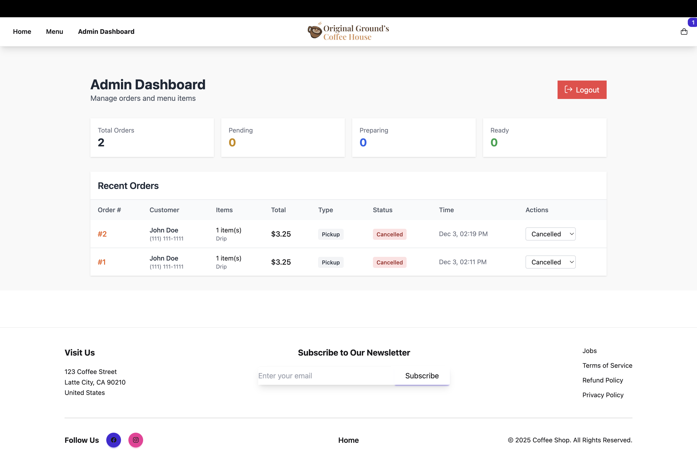

Coffee Shop Ordering System
A full-stack MEVN application built to streamline mobile ordering for coffee shops with drive-through service.
Role
Tanvir Patwary - Full-Stack Developer
About the Project
The Coffee Shop Ordering System is a production-ready web application designed to solve a real problem: long drive-through wait times at coffee shops. Customers can order ahead on their mobile devices, and staff can manage orders in real-time through a dedicated admin dashboard.
This project demonstrates end-to-end development capabilities, from database design and REST API architecture to responsive frontend implementation and secure authentication. The system is fully deployed and operational, handling real transactions through Stripe's payment infrastructure.
The Problem
Coffee shops with drive-through service face several challenges during rush hours: long wait times that reduce customer satisfaction, verbal order-taking that leads to miscommunication and remake costs, and third-party delivery apps that charge 25-30% commission per order. Manual order management also creates inefficiencies for staff who must juggle in-person customers with drive-through orders.
Technical Architecture
┌─────────────────┐ ┌─────────────────┐ ┌─────────────────┐
│ FRONTEND │ │ BACKEND │ │ DATABASE │
│ (Vercel) │ │ (Railway) │ │ (Railway) │
│ │ HTTPS │ │ SQL │ │
│ Vue.js + Vite │ ──────► │ Node.js/Express │ ──────► │ MySQL + ORM │
│ DaisyUI/Tail │ REST API│ JWT Auth │ Queries │ Sequelize │
│ Pinia State │ │ Stripe API │ │ │
└─────────────────┘ └─────────────────┘ └─────────────────┘
The application follows a three-tier architecture with a Vue.js frontend, Node.js/Express backend, and MySQL database. The frontend communicates with the backend through RESTful API endpoints, with JWT tokens securing protected routes. Stripe handles payment processing on the backend, while the admin dashboard uses auto-refresh to display real-time order updates.
Tech Stack
Frontend
- Vue.js 3 - Progressive JavaScript framework
- Vue Router - Client-side routing
- Pinia - State management
- DaisyUI - Component library
- Tailwind CSS - Utility-first styling
- Vite - Build tool
Backend
- Node.js - JavaScript runtime
- Express.js - Web framework
- MySQL - Relational database
- Sequelize ORM - Database management
- JWT - Token authentication
- bcrypt - Password hashing
- Stripe API - Payment processing
Key Features
🔐 Secure Authentication
JWT-based authentication with bcrypt password hashing (10 salt rounds). Protected admin routes with middleware verification and 1-hour token expiration for security.
📱 Mobile-First Design
Responsive interface optimized for mobile ordering. Built with DaisyUI components and Tailwind CSS utilities for consistent styling across all screen sizes.
💳 Stripe Integration
Backend payment processing with Stripe API. Payment intent creation and confirmation flow implemented, with webhook support ready for production use.
⚡ Real-Time Dashboard
Admin dashboard with auto-refresh every 15 seconds. Order status management (Pending → Preparing → Ready → Completed) with instant updates.
🗄️ Database Design
Relational database with proper foreign key relationships. Tables for MenuItems, Orders, OrderItems, Customizations, and Users with Sequelize ORM preventing SQL injection.
Admin Dashboard
Real-time order management interface with status updates and customer information.
Challenges and Solutions
Challenge: CORS Configuration
When deploying to production, the frontend on Vercel couldn't communicate with the backend on Railway due to CORS restrictions blocking cross-origin requests.
Solution: Configured CORS middleware in Express to allow requests from the Vercel domain. Initially used wildcard (*) for testing, then restricted to specific origins for security.
Challenge: Database Connection in Production
Local database configuration was hardcoded to localhost, causing connection failures when deployed to Railway. Environment variables weren't being read correctly.
Solution: Updated database config to use environment variables (DB_HOST, DB_USER, DB_PASSWORD) and set NODE_ENV=production. Tested connection using Railway's TCP proxy domain instead of private network.
Challenge: JWT Token Validation
Tokens created locally with one JWT_SECRET couldn't be verified in production with a different secret, causing 403 Forbidden errors on protected routes.
Solution: Ensured consistent JWT_SECRET across environments and implemented proper token refresh on login. Added clear error messages for debugging authentication failures.
Development Process
Development began with database schema design using Sequelize models to establish relationships between entities. The backend API was built first, with endpoints for authentication, menu management, and order processing. JWT authentication was implemented early to secure admin routes.
The frontend was developed incrementally, starting with the menu browsing interface, then adding cart functionality with Pinia for state management, and finally implementing the checkout flow. DaisyUI components were integrated for consistent UI styling across the application.
Deployment involved separate hosting for frontend (Vercel) and backend (Railway), requiring careful environment variable management and CORS configuration. Database migration to Railway's MySQL service required adjusting connection parameters and using TCP proxy for external access.
What I Learned
- Production deployment considerations: CORS configuration, environment variables, and database connectivity across different hosting platforms
- REST API design principles and proper HTTP status code usage (200, 201, 400, 401, 403, 500)
- JWT authentication implementation with bcrypt password hashing and token expiration management
- Database design with Sequelize ORM: defining models, relationships, and preventing SQL injection through parameterized queries
- State management in Vue.js using Pinia for cart functionality and notification handling
- Responsive design with Tailwind CSS utilities and mobile-first development approach
- Debugging production issues using server logs, network inspection, and systematic troubleshooting
- Payment processing workflow with Stripe API integration on the backend
Future Enhancements
Future development will focus on completing the Stripe frontend integration for live payment processing, implementing customer accounts with order history, and adding email/SMS notifications for order status updates. Additional features include menu item images, advanced reporting and analytics for shop owners, loyalty rewards program, and multi-location support for coffee shop chains.
Try It Out!
Experience the live application and test the admin dashboard functionality!
💡 Admin Dashboard: Navigate to /admin | Username: admin | Password: password